PySpark is a great pythonic ways of accessing spark dataframes (written in Scala) and manipulating them. It makes it easy to switch back to familiar python tools such as matplotlib and pandas when all the heavy lifting (working with really large data) is done.
The spark dataframe is the core object of interest in pyspark, and is similar to a pandas dataframe in some aspects. A key difference, as pointed out earlier is that all operations on the dataframe are not executed until it is really needed.
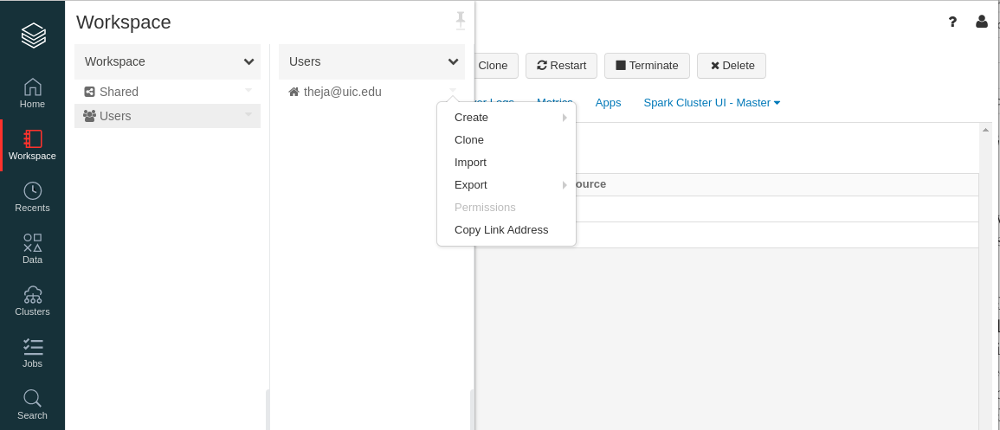
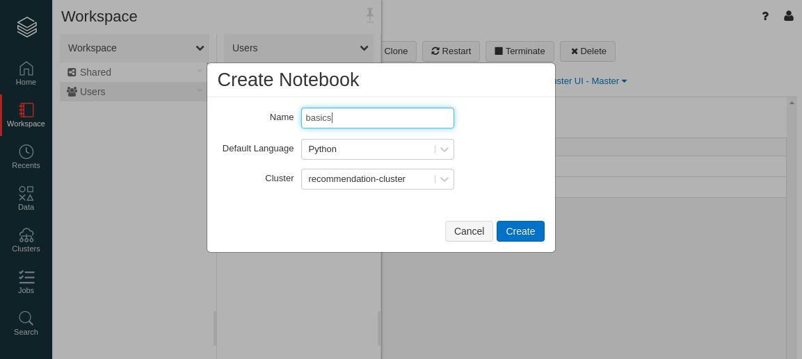
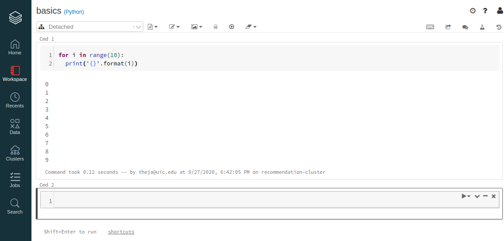
We will now access the data we stored in S3. In particular we will use the following snippet.
AWS_ACCESS_KEY = "AABB"
AWS_SECRET_KEY = "CCDD"
sc._jsc.hadoopConfiguration().set("fs.s3n.awsAccessKeyId", AWS_ACCESS_KEY)
sc._jsc.hadoopConfiguration().set("fs.s3n.awsSecretAccessKey", AWS_SECRET_KEY)
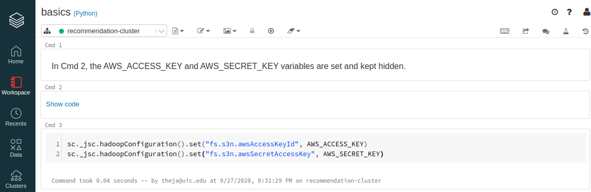
Reading from S3 can be achieved by the following snippet:
df = spark.read.csv("s3://databricks-recsys/u.data",header=True, sep="\t",inferSchema = True)
display(df)
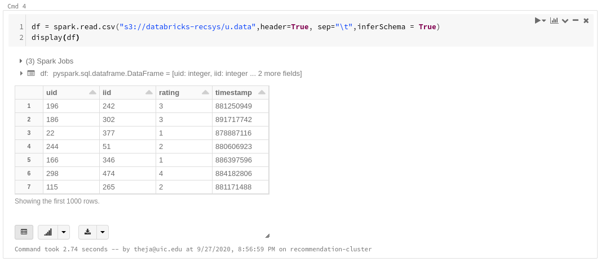
In the screenshot above, display() works similar to pandas .head(). Databricks provides some functionality to plot the output right there as well.
Below are two example plots for our dataframe (recommendation system dataset)
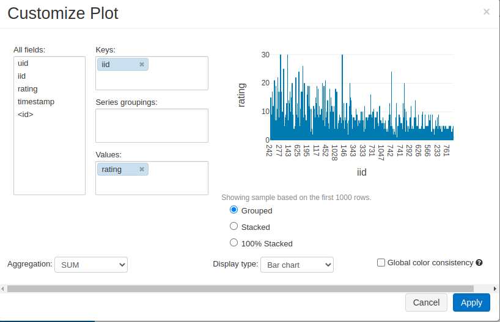
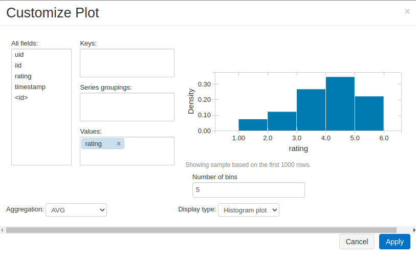
Note that the dataframe is not really holding all the data yet. Only when display() or .show() or .collect() are applied would the query actually take place.
In the above example, we read the data as a csv. In addition to csv, spark supports reading from databases as well as from file formats such as parquet (which is a popular storage format in the Spark ecosystem). Many other formats are supported, and its useful to go through the documentation here.
Lets write our data to the parquet format and then read it back again. As can be seen from this page, the read/write operations can be achieved in a straightforward manner.
s3path = "s3://databricks-recsys/"
df.write.parquet(s3path+"u.parquet")
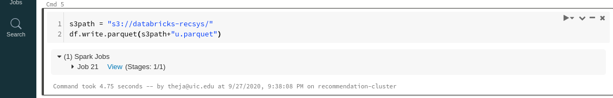
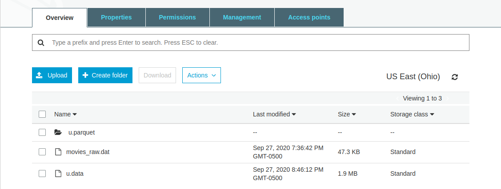
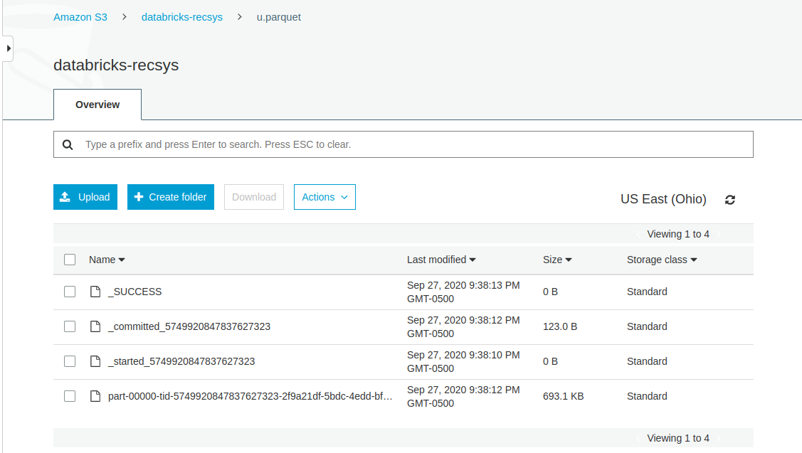
Reading from the parquet data stored on S3 is achieved in a similar fashion:
df_parquet = spark.read.parquet(s3path+"u.parquet").show()
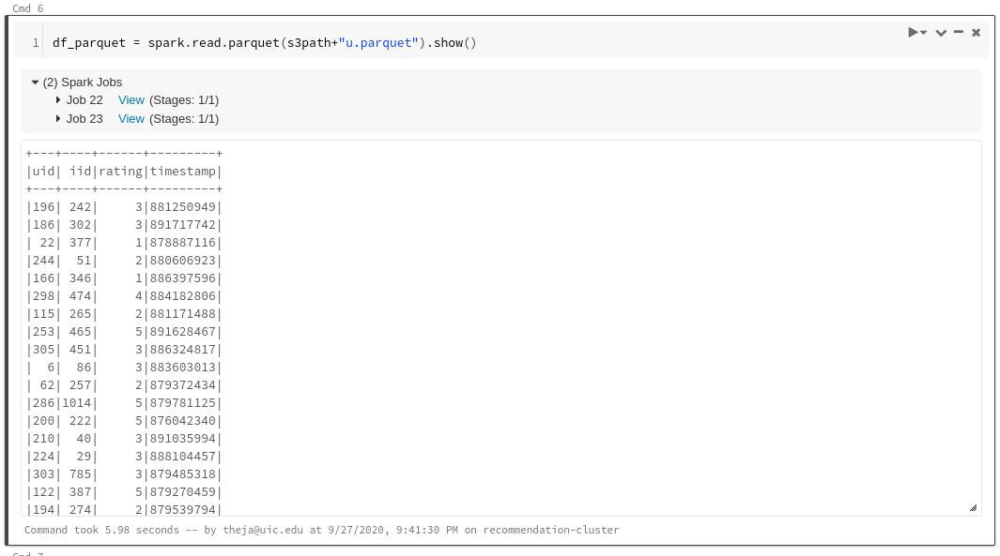
We can convert each of these dataframes into another easily. But sufficient care should be taken while doing this as the pandas dataframe will like on the driver.
pdf = df.toPandas()
pdf.head()
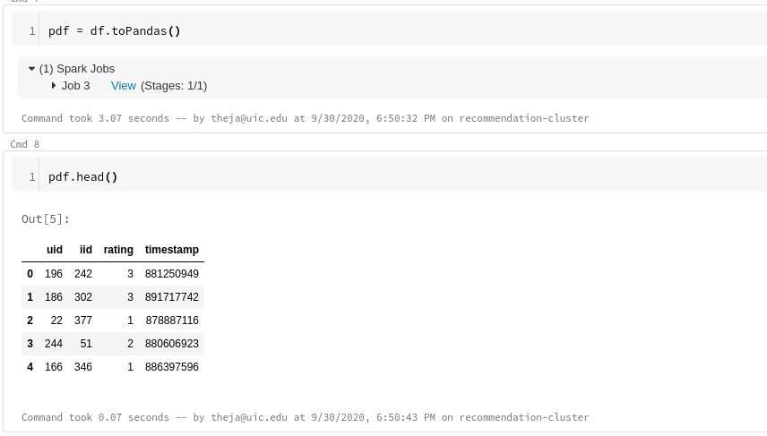
We can go from a pandas dataframe to a spark one via the following and infer its properties:
sdf = sqlContext.createDataFrame(pdf)
sdf.describe()
sdf.printSchema()
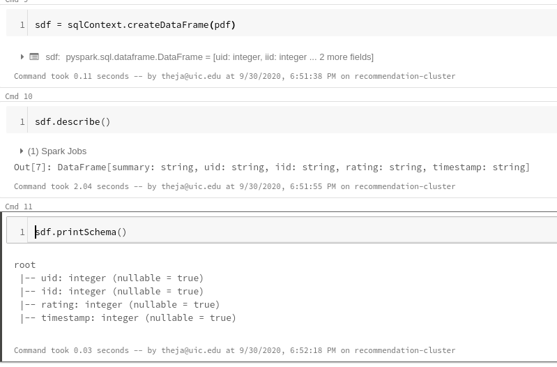
Folks familiar with pandas may have a bit of friction while working with a spark dataframe. To ease this friction, one can use a library called koalas. This library allows using pandas syntax while allowing one to leverage the strength of RDDs behind the scenes.
We don’t have to install this library explicitly in Databricks.
import databricks.koalas as ks
kdf = sdf.to_koalas()
kdf['iid'].to_numpy()[:3]
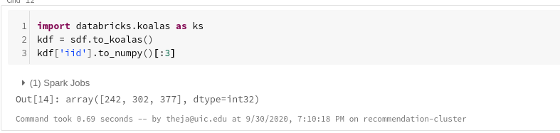
type(ks.from_pandas(pdf))
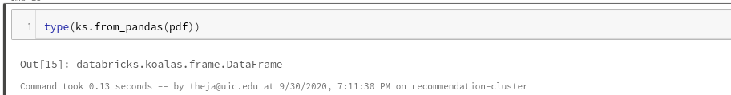
There are many ways to achieve the same effects that one does using pandas with a spark dataframe. For instance, there are equivalent ways to filter, aggregate and pivot data.
One of the familiar ways that we will discuss next is by using SQL (using Spark SQL). While we will not go into the details of SQL here, it suffices to say that it is one of the most versatile tools for data management and manipulation.
Lets create a view from our spark dataframe (recommendation data):
sdf.createOrReplaceTempView('sdf')
query = 'select distinct iid from sdf order by iid'
spark.sql(query).show()
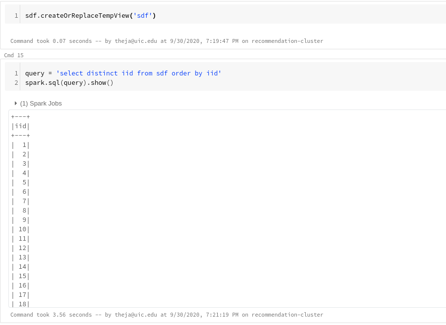
We can use multiple such views to manipulate the data on a large scale. For instance, to get the movies which have been highly rated along with their names, we can do the following:
movies_sdf)sdf) using the key (iid)Finally, convert it to a koalas dataframe for a prettier display and further processing.
movies_sdf = spark.read.csv("s3://databricks-recsys/movies_raw.dat",header=False, sep="|",inferSchema = True)
display(movies_sdf)
movies_sdf.createOrReplaceTempView('movies_sdf')
query = """
select sdf.iid, avg(sdf.rating) as avg_rating, count(sdf.rating) as num_rating, first(movies_sdf._c1) as movie
from sdf,movies_sdf
where sdf.iid = movies_sdf._c0
group by iid
having num_rating >= 5
order by avg_rating desc
"""
top_movies_sdf = spark.sql(query)
top_movies_kdf = top_movies_sdf.to_koalas()
top_movies_kdf.head()
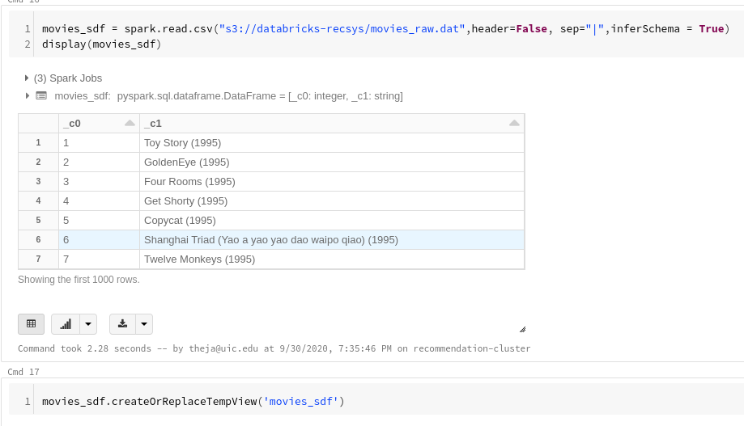
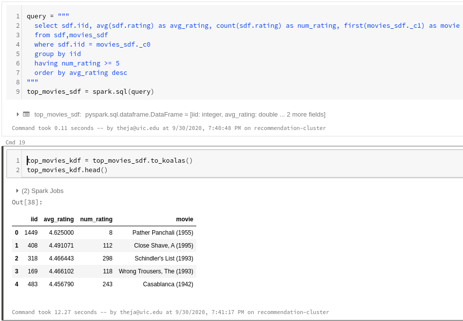
display() again to quickly visualize our output. If we zoom into the top movies to see if our estimates have high uncertainty, we can see that except for the first movie, the other have a decent number of ratings.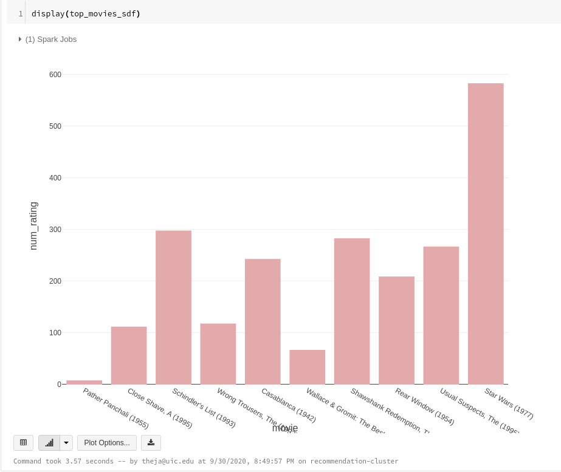
the spark dataframe API allows for doing many of the above manipulations. For instance, here is a grouping operations:
sdf_grouped = sdf.groupBy("iid").agg({'rating':'avg'})
pdf_grouped = sdf_grouped.toPandas()
len(pdf_grouped)
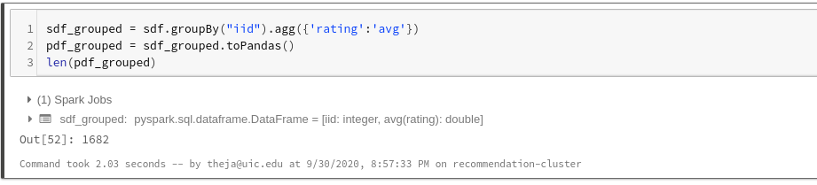
Pandas user defined functions (UDFs), introduced in 2017, can be used on spark dataframes to bring in more functionality in manipulation. The reason for seeking this extensibility is again due to the attractive large scale distributed processing of datasets.
The idea here is to group the original dataframe so that each group can be worked on its own node/worker. That is, once the group is in the worker, we can think of this group as a pandas dataframe over which we can do the usual non-distributed operations we are familiar with.
Doing this allows running many ML and statistical packages (numpy, statsmodels, pandas) in a distributed manner (as long as these packages working on individual groups separately is not a deal-breaker).
For more information on this, see https://docs.databricks.com/spark/latest/spark-sql/udf-python-pandas.html
Because the objective is to use distributed processing to the fullest, the lesser the amount of work done on the driver the better.
This means, avoiding toPandas() on large data, avoid retaining large amount of data that is not inside a spark dataframe (e.g., lists, dictionaries).